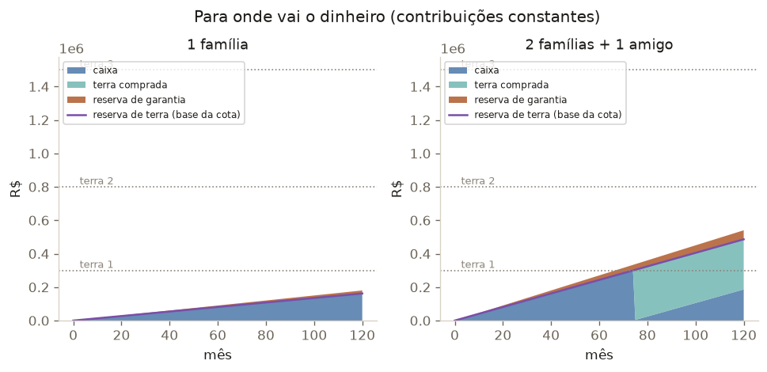
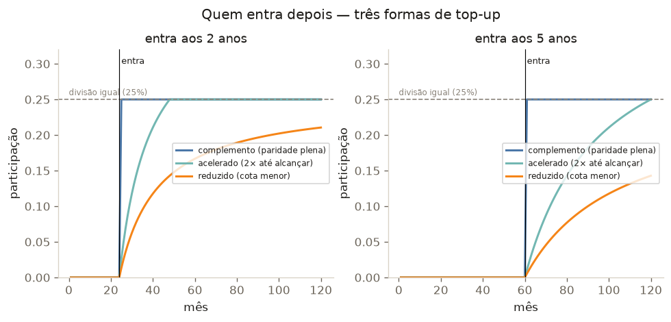

Para onde vai o dinheiro
A área empilhada mostra o caixa (dinheiro ainda não gasto), a terra comprada e a reserva de garantia. A linha roxa é a Reserva de Terra — a base da sua cota.

Uma família sozinha não consegue. O coletivo não é opcional — é o ponto.
Comprar barato → trocar por terra maior
Compramos a terra mais barata assim que o caixa permite e trocamos por uma maior quando o dinheiro permitir, até o tamanho ideal.

Quem entra depois
Alguém entra aos 2 ou aos 5 anos? Três formas — sempre combinadas na entrada:
- Complemento
- Paga de uma vez o equivalente ao tempo perdido e mantém o ritmo → paridade plena (25%).
- Acelerado
- Sem valor retroativo; paga 2× por mês até alcançar os demais.
- Reduzido
- Paga apenas a partir da entrada → cota permanentemente menor (14% se entrar aos 5 anos).
